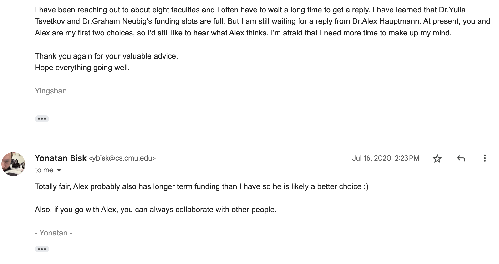
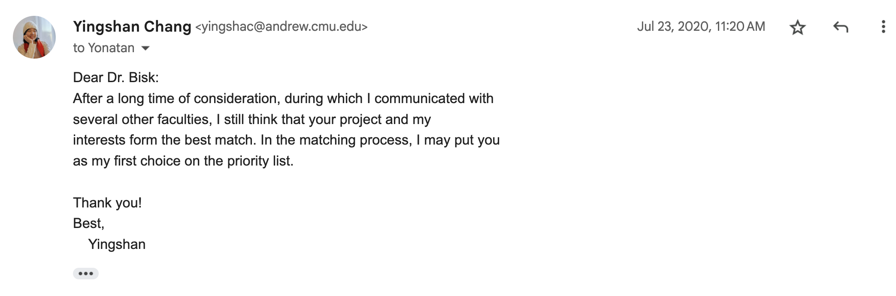
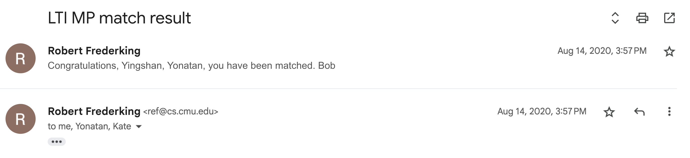
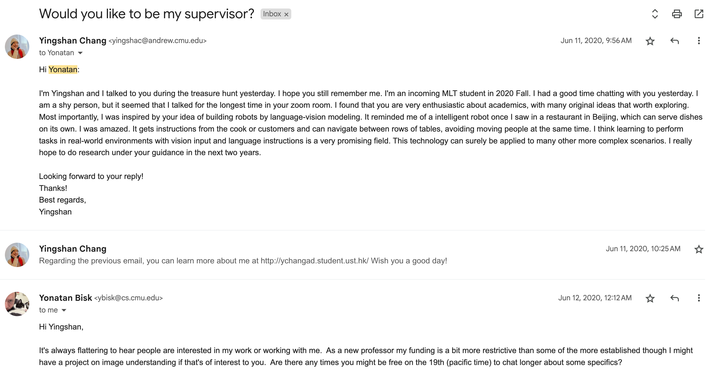
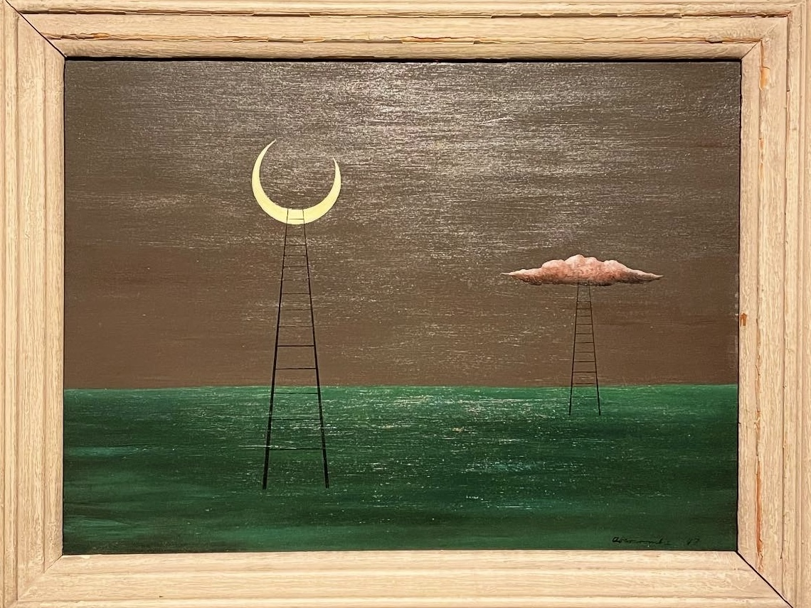

This Wednesday was my birthday.
I had a cake party with claw lab where I accidentally told everyone that I'm searching for labs where I might find a sense of belonging for my postdoc and the best options are Harvard and Princeton. I hope my labmates won't laugh at me if I don't end up at these places. I know how hard it is.
Actually before the cake party we had a large group meeting (a research bonanza) where everyone had to do a 2min-2slides self-introduction. I think what I did made some friends re-think whether they are the most OOD student in the lab.
I was very broken last week, but am very grateful this week. What happened? It's probably because … Jimin is leaving, Tiffany is finishing (her phd), the spring is coming, I'm growing/aging …
During this Thursday's meeting with Yonatan, I said I restored hope. Wenjie played a critical role in restoring my faith in that people who appreciate my thinking actually exist in the world. So I've decided to do another round of search for these people. I reflected upon why I fell into “tunnel vision” last week due to overexposure to LLM discussions. I really hope that at some future point I'll be able to approach or interact with the LLM people in a friendly manner. Currently I'm not able to do that. I always overreact, my wholesomeness always gets undermined… because I have a fundamental fear that my corner is getting squeezed or vanishing. When I said I started out with a moon, I cried again. Because I didn't have the confidence to say it until very very recently… until yesterday.
Yesterday was the first time I've ever said in public what I truly want. By “in public” I mean in a professional-ish environment (conversations with my mom and dad and non-cs friends didn't count). I also pointed out the struggles I'm facing, which is slicing off a reasonably-scoped question from the “monolith”, and sharpening the fuzzy picture. After doing so I didn't feel bad!
This week was LTI's open house. I saw many new faces. I went to the open house room for free food. Stacey said “come in and get food before the kids come down!”
The “kids”.
I can't help but wondering, who are they?
I met with an newly admitted student, Lucy. She approached Yonatan because of our recent papers.
She is right about many limitations of the current LLM paradigm.
I thought the young are formidable.
Pat Shafto visited CMU today. He was giving a talk at the math department.
Yonatan was meeting with Pat in the morning. I was like "🤩 any opportunity for me to join?"
So I joined —— a conversation between two adults in the field.
Pat asked why not doing non-parametric bayesian for inductive generalization.
When I was working on the paper, I scrutinized the “old” community who did bayesian inference for induction, in order to make sure that the problem that I was “defining” hadn't happened to be already solved by others. And in the end, I was pretty sure that *the* induction problem which the “old” community studied is different from what I was talking about. In fact, when I found out that, the classic ML people (e.g. Tom Mitchell) and the Bayesianist cognitive scientists talk about two different things with identical terms: concept and induction…… I was like “wtf?” Well, I could see how they are related eventually, but at first I was so confused and thought human language is NOT expressive AT ALL. This realization made me begin to seriously look for math. I guess this is a good transition.
We reached one conclusion that Pat, Yonatan, and me represent three stages of an academic career. Yet we all face the challenge of not being able to find the right community. The challenge persists. I'm happy to face this reality. This affirms my belief that the moon doesn't exist a priori but only comes into existence when enough people start shooting for it.
At noon I went to the math department for Pat's talk.
The talk was given in a very small conference room. This was in stark contrast to talks in SCS. E.g. last week Ken Goldberg came and the talk happened in an auditorium.
But I like the intimate vibes of a small conference room. I felt like: oh, this is the math department, full of people higher above me up the mountain.
In the evening, I did myself a huge disfavor by pulling up the very earliest chat history between me and Yonatan, both on slack and gmail. Then I cried like shit. Back then I addressed Yonatan as “Dr. Bisk”. Back then I had options to choose Alex Hauptmann or Jamie Callan as my advisor.
When I just finished undergrad and didn't know nothing, I had only one criteria for my future advisor: I didn't want my mental health to be permanently destroyed during my PhD.
I have probably evaluated Yonatan based on vibes as well. In our first zoom meeting, I remembered he had a side swept bang and he wore a headset like a DJ. Then I decided: This person! He's the least likely to destroy my mental health.

I told Yonatan I ranked him as my first choice after "a long time of consideration" and after "communication with several other faculties" and after he told me "Alex is likely a better choice :)".


Actually I completely forgot how I managed to “make” Yonatan admit me in the first place. But as I re-read those emails, I realized, damn, I accidentally hit all the correct buzzwords in my first email. Maybe that was what I heard him rambling in the Gathertown.

After I jointed Yonatan's lab, I immediately threw away all those buzzwords and became a weird kid.
I refused to touch an actual robot. I dismissed language-vision models (as not being able to do true reasoning). I've never touched a simulator environment, let alone a real one. I attacked Transformers, end-to-end, sparks of AGI and made fun of multimodal agents. I think most language people live in a giant lie and CV is a parentless field.
But at the end of the day I was hopeless and felt inferior because nobody understood what I want, nobody was able to engage in a discussion that I truly like, or told me how to do the type of research that I truly admire.
I always know I have a moon but I don't even have the right language to describe it. Neither have I found the language. I was just circling around and doubting forever whether the moon actually exists.
This morning Yonatan told Pat that we just saw the transition lately where I became able to do research meetings with my self (and with a whiteboard). I explained that previously I relied on Yonatan to give me the momentum. But the friction was too large that my momentum would quickly vanish after every meeting. In contrast, now I'm able to self-maintain that momentum and generate next actions. Yonatan was like: that's why you should leave. I only work with people who can't do that yet.
In the afternoon I met Jacob to give feedback on his first paper in which he proposed a new embodied spatial reasoning dataset. I realized I was unintentionally treating him as an “advisee” when he sent me his abstract last night but I shouldn't. I should treat him as a labmate, so I tried today. He also told me he wanted to do some MI research because mechanistically understanding V/LLMs would be very cool. People keep finding the same thing as “the cool thing”.
This made me think about the art of advising again. During PhD I have been trained (i.e. forced) to form opinions, scientifically communicate my opinions, and sell my opinions publicly, firmly and professionally.
But IF I become a professor at some future point, I should hold my opinions in front of my students. I want my future students to develop their own opinions from scratch. So I guess per the MI discussion I will encourage Jacob to read more about MI and to continue looking for the gems and that's it.
Also if ever a fresh graduate student approaches me because of Model Successor Functions, I will tell them no no no this is the wrong entrance to the field. You should enter the field through Experience Grounds Language.
